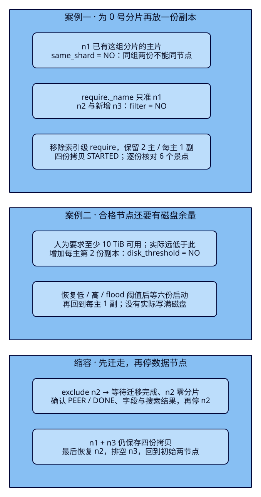
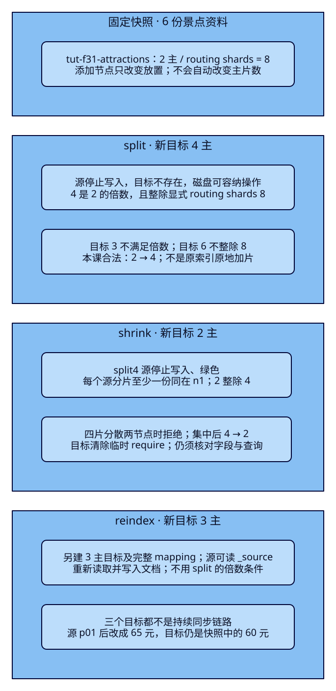

加了机器，
副本为什么还没分配？
杭州西湖仍能搜出两张景点卡片，运维却看到副本UNASSIGNED。加了一台数据节点，告警也没消失；另一台准备退役，直接关机又会把恢复压力留给集群。F30讨论节点失效后的可用性，本课转向有计划的容量变化：先找出哪条规则挡住放置，再扩容或排空，最后判断是否真的需要改变主分片数。成功的证据包含分片位置、完整资料和同一搜索结果。
学完能用输出证明什么
- 从allocation explain指出same_shard、filter、disk_threshold的实际NO，解释新增节点为什么仍不合格。
- 在三节点上修复分配，排空数据节点后再停机，核对恢复记录、6个ID及全部字段，并恢复初始拓扑。
- 复现split/shrink的拒绝与合法操作，对比2→4、4→2、reindex到3主片；证明源后续改价不会自动进入三个目标。
本课目录
图解跳转：01 · 分配条件与排空 · 02 · 改变主片数的条件
1. 加节点、加副本、加主片是三件事
ES把旅游搜索资料放进分片，每个分片组有primary与配置数量的replica。假设一个索引有2个主分片，每主1份副本，它需要放置4份拷贝。增加一台data节点，是多一个可能承载拷贝的地点；把副本数从1改成2，是要求保存6份拷贝；把主分片数从2改成4，则改变了文档分组，需要另外考虑索引操作。三件事不能相互替代。
加节点后，ES可以重新分配和迁移已有分片，原索引仍是2个主分片。一份过大的主分片也不会仅因机器增多就自动变成两份较小主分片。反过来，加副本会增加存储和复制工作；它不把一组primary负责的写入拆成多组。是否能承受当前负载，需要容量与负载测量，留到F43；本课小语料不能证明吞吐提升。
游客看到的搜索语义不需要改变：仍查“西湖”、杭州、预算200元、3km内、在售、CNY，按景点ID稳定排序。后台改变的是数据放置。业务数据库仍保存业务事实，ES是搜索投影；本课不涉及订单或实时库存，也不让浏览器管理集群。
2. 有空节点，也要先成为合格候选
把0号分片的副本想成需要另一处存放的资料。n1已经有它的主片，同组副本再放n1，节点一失效两份会一起消失，所以same_shard会拒绝。n2没有这份资料，但索引又要求“只能放n1”，filter也会拒绝。再加n3，如果仍不满足这个名字条件，它依旧不能接收副本。这是规则冲突，不能只靠增加进程数解决。
ES的分配决策器decider会从不同约束判断候选节点，包括角色、节点过滤、磁盘、同组分片、分片上限等。一个YES不能抵消另一个NO；THROTTLE表示当前需要等待，也不能当作永久拒绝。allocation explain解释指定拷贝在当时为什么这样放置，不是一次请求就列尽所有未来故障。修掉一个NO后，可能才看到下一个约束。
本课始终指定索引、shard=0与primary=false，不让无参数explain随机挑一份未分配分片。include_yes_decisions帮助理解同一个节点上哪些规则允许、哪些拒绝；include_disk_info提供磁盘上下文。集群健康色只表达分片可用状态：本课yellow时主片仍可搜索，green也不说明源字段、索引名或业务筛选一定正确。

官方说明与v9.4.0具体实现
Explain API说明指定拷贝与候选决策；分配与磁盘设置说明阈值和排空过滤。本课按固定tag核对FilterAllocationDecider.canAllocate / shouldFilter、SameShardAllocationDecider.canAllocate与DiskThresholdDecider.canAllocate / canRemain；6份目标源码与官方tag字节核对独立于真实API验收。
3. 两台基础节点，第三台按案例加入
| 服务 / HTTP | 角色 | 用途 |
|---|---|---|
| n1 / 19531 | master、data、ingest | 唯一master候选，Java入口，承载数据；本课不停止它 |
| n2 / 19532 | data | 初始第二数据节点，排空缩容对象 |
| n3 / 19533 | data | 扩容时加入；最后排空退出，恢复n1+n2 |
这是隔离的分配实验，单master不提供master故障容忍；选举问题已经在F30分别验证。三进程同Docker VM，共享宿主磁盘和故障范围，不能当成三块独立物理盘。每进程192MiB堆、640MiB容器上限，只用于6份资料；启动前检查现有服务与Docker可用内存。本课HTTP仅绑定127.0.0.1，transport在独立网络，无认证，不是生产部署配置。
ES9.4.0/Lucene10.4.0，独立网络与卷名均以es-framework-f31开头。首次只有n1/n2两个基础卷都不存在时使用bootstrap；形成后移除n1实际运行配置中的引导名单，核对UUID与node ID。已有完整基础卷用稳定配置，缺一份则拒绝自动引导。n3没有master资格，它的新数据卷不参与首次选主。
cd projects/travel-search
python3 labs/f31/lab.py start --out /tmp/f31-reader-setup完整稳定Compose与仅首次使用的引导配置
name: es-framework-f31
x-common: &common
image: docker.elastic.co/elasticsearch/elasticsearch:9.4.0
labels: {esweb.lesson: f31}
mem_limit: 640m
environment: &environment
cluster.name: travel-f31-lab
network.host: 0.0.0.0
transport.port: 9300
discovery.seed_hosts: n1:9300
xpack.security.enabled: "false"
xpack.ml.enabled: "false"
ES_JAVA_OPTS: -Xms192m -Xmx192m
ulimits:
nofile: {soft: 65535, hard: 65535}
services:
n1:
<<: *common
environment:
<<: *environment
node.name: travel-f31-n1
node.roles: master,data,ingest
ports: ["127.0.0.1:19531:9200"]
volumes: ["n1-data:/usr/share/elasticsearch/data"]
n2:
<<: *common
environment:
<<: *environment
node.name: travel-f31-n2
node.roles: data
ports: ["127.0.0.1:19532:9200"]
volumes: ["n2-data:/usr/share/elasticsearch/data"]
n3:
<<: *common
profiles: [extra]
environment:
<<: *environment
node.name: travel-f31-n3
node.roles: data
ports: ["127.0.0.1:19533:9200"]
volumes: ["n3-data:/usr/share/elasticsearch/data"]
volumes:
n1-data:
name: es-framework-f31-n1-data
labels: {esweb.lesson: f31}
n2-data:
name: es-framework-f31-n2-data
labels: {esweb.lesson: f31}
n3-data:
name: es-framework-f31-n3-data
labels: {esweb.lesson: f31}# Only for the first formation with BOTH new base volumes. Remove after formation.
services:
n1:
environment:
cluster.initial_master_nodes: travel-f31-n1另一终端先将JAVA_HOME/PATH指向完整JDK25，复用F07的Boot4.0.8与官方Java/Rest5 Client9.4.8。应用JDK25与ES内置JVM26.0.1分开记录，不修改共享Java与展示壳：
cd projects/travel-search/backend
./mvnw -B -ntp clean package
ES_URL=http://127.0.0.1:19531 ES_INDEX=tut-f31-attractions APP_PORT=18081 \
java -jar target/travel-search-0.7.0.jar回到项目目录运行完整主流程；它先点名清理本课8个索引名，再建固定样本。收据目录必须是新目录。正文展示关键手工请求，脚本提供全部等待、断言与恢复；HTTP统计包含主流程的重复数据核对，启动、轮询、清理、Java接口和浏览器独立计数：
export APP_URL=http://127.0.0.1:18081
python3 labs/f31/lab.py run --out /tmp/f31-reader-round1资料p01/p02符合搜索条件，p01票价6000分，p02免费；p03超预算，p04城市FZ，p05下架，p06不含西湖。名称是带空格的合成中文词项，用whitespace便于排除分词差异；金额CNY整数分，坐标相同口径。2主、每主1副、routing shards显式8、strict与refresh=-1都在请求中锁定；8是本课配置，不是ES默认值。
完整6份固定资料
{"create":{"_id":"p01"}}
{"attraction_id":"p01","name":"西湖 湖畔","city_code":"HZ","ticket_price_fen":6000,"currency":"CNY","status":"open","location":{"lat":30.25,"lon":120.15}}
{"create":{"_id":"p02"}}
{"attraction_id":"p02","name":"西湖 公园","city_code":"HZ","ticket_price_fen":0,"currency":"CNY","status":"open","location":{"lat":30.251,"lon":120.15}}
{"create":{"_id":"p03"}}
{"attraction_id":"p03","name":"西湖 山居","city_code":"HZ","ticket_price_fen":30000,"currency":"CNY","status":"open","location":{"lat":30.252,"lon":120.15}}
{"create":{"_id":"p04"}}
{"attraction_id":"p04","name":"西湖 古街","city_code":"FZ","ticket_price_fen":1000,"currency":"CNY","status":"open","location":{"lat":30.251,"lon":120.15}}
{"create":{"_id":"p05"}}
{"attraction_id":"p05","name":"西湖 故居","city_code":"HZ","ticket_price_fen":5000,"currency":"CNY","status":"closed","location":{"lat":30.253,"lon":120.15}}
{"create":{"_id":"p06"}}
{"attraction_id":"p06","name":"运河 西溪","city_code":"HZ","ticket_price_fen":1000,"currency":"CNY","status":"open","location":{"lat":30.25,"lon":120.15}}4. f31-c01：第三个节点没有绕过require
建索引时先故意要求所有拷贝只能放travel-f31-n1。两个primary能在n1上启动，但各自副本不能也放n1。这里Bulk显式等待每组至少1个活拷贝；请求成功没有证明副本齐全。写完显式refresh，再查询和核对全部资料：
{
"settings": {
"number_of_shards": 2,
"number_of_replicas": 1,
"refresh_interval": "-1",
"number_of_routing_shards": 8,
"routing.allocation.require._name": "travel-f31-n1"
},
"mappings": {
"dynamic": "strict",
"properties": {
"attraction_id": {
"type": "keyword"
},
"name": {
"type": "text",
"analyzer": "whitespace"
},
"city_code": {
"type": "keyword"
},
"ticket_price_fen": {
"type": "integer",
"coerce": false
},
"currency": {
"type": "keyword"
},
"status": {
"type": "keyword"
},
"location": {
"type": "geo_point"
}
}
}
}export F31_ES=http://127.0.0.1:19531
curl -sS -X PUT "$F31_ES/tut-f31-attractions" \
-H 'Content-Type: application/json' --data-binary @search/f31/create.json
curl -sS -X POST "$F31_ES/tut-f31-attractions/_bulk?wait_for_active_shards=1" \
-H 'Content-Type: application/x-ndjson' --data-binary @data/f31/attractions.ndjson
curl -sS -X POST "$F31_ES/tut-f31-attractions/_refresh"
curl -sS "$F31_ES/_cat/shards/tut-f31-attractions?format=json&h=shard,prirep,state,node"
curl -sS -X POST "$F31_ES/_cluster/allocation/explain?include_yes_decisions=true&include_disk_info=true" \
-H 'Content-Type: application/json' \
-d '{"index":"tut-f31-attractions","shard":0,"primary":false}'实测0号副本current_state=unassigned、can_allocate=no；n1出现same_shard=NO，n2出现filter=NO。展开原始deciders，还能看到允许项，不能截出一个YES就宣布可分配。此时Java观察窗照样命中p01、p02，60元与0元；可用查询与副本不足同时成立。
docker compose -f infra/f31/compose.yaml up -d n3等_nodes显示三个节点、同UUID，再发送相同explain：新n3仍为filter=NO，索引仍yellow。修复要移除索引级名字限制，保留每主1份副本，随后等待分片启动：
curl -sS -X PUT "$F31_ES/tut-f31-attractions/_settings" \
-H 'Content-Type: application/json' \
-d '{"index.routing.allocation.require._name":null}'
curl -sS "$F31_ES/_cluster/health/tut-f31-attractions?wait_for_status=green&wait_for_no_relocating_shards=true&wait_for_no_initializing_shards=true&timeout=60s"
curl -sS "$F31_ES/_cat/shards/tut-f31-attractions?format=json&h=shard,prirep,state,docs,node"正式实验的四份拷贝最终分布在n1/n2/n3，0号组每份含2篇，1号组每份含4篇。具体主副位置可能随调度改变，不能照抄某次节点名当成固定规律；也不能把CAT的主副docs相加当业务资料数。完整搜索仍只有6份资料，代表查询仍是p01、p02。新增机器增加了合格放置空间，解除约束才让它真正参与。
5. f31-c02：有空位，也可能没有足够磁盘余量
磁盘分配关注节点数据路径的可用空间。默认low/high/flood_stage分别为已用85%/90%/95%：low主要限制接收新分配，high推动迁出，flood会给相关索引加read_only_allow_delete以阻止继续写入。low对从未分配过的新主片有例外，不能说“超过85%所有写入立刻停止”。百分比表示已用比例；改为字节值时表示至少保留多少可用空间，数值方向相反。
大盘还要考虑max_headroom。v9.4.0在相应水位没有显式配置时，low/high/flood的默认余量上限为200GB/150GB/100GB；显式设置水位后不能直接套用这些默认上限。本课不实际写满磁盘，不触发high迁出或flood写封锁，而是检查每节点实际可用量大于2GiB且小于10TiB，再临时要求low至少10TiB可用，high只需1GiB、flood需512MiB。这使新副本因low被拒绝，原拷贝仍能保留。
curl -sS "$F31_ES/_nodes/stats/fs"
curl -sS -X PUT "$F31_ES/_cluster/settings" -H 'Content-Type: application/json' \
-d '{"persistent":{"cluster.routing.allocation.disk.watermark.low":"10tb","cluster.routing.allocation.disk.watermark.high":"1gb","cluster.routing.allocation.disk.watermark.flood_stage":"512mb"}}'
curl -sS -X PUT "$F31_ES/tut-f31-attractions/_settings" \
-H 'Content-Type: application/json' -d '{"index.number_of_replicas":2}'
curl -sS -X POST "$F31_ES/_cluster/allocation/explain?include_yes_decisions=true&include_disk_info=true" \
-H 'Content-Type: application/json' \
-d '{"index":"tut-f31-attractions","shard":0,"primary":false}'副本数是“每个主片的副本份数”，2主×(1+2)=6份。原4份保留，新需2份UNASSIGNED；不持有该组拷贝的候选出现disk_threshold=NO，持有者仍可能同时出现same_shard=NO。读取响应中的实际free与minimum required，才能把拒绝归因于本课人为提高的门槛，而非声称物理磁盘真的满了。
curl -sS -X PUT "$F31_ES/_cluster/settings" -H 'Content-Type: application/json' \
-d '{"persistent":{"cluster.routing.allocation.disk.watermark.low":null,"cluster.routing.allocation.disk.watermark.high":null,"cluster.routing.allocation.disk.watermark.flood_stage":null}}'
curl -sS "$F31_ES/_cluster/health/tut-f31-attractions?wait_for_status=green&wait_for_no_relocating_shards=true&wait_for_no_initializing_shards=true&timeout=60s"
curl -sS -X PUT "$F31_ES/tut-f31-attractions/_settings" \
-H 'Content-Type: application/json' -d '{"index.number_of_replicas":1}'恢复阈值后先等6份全部STARTED，再回到4份，证明修复确实使那两份得以分配。临时设置与基线逐项核对；本课没有transient覆盖。真实磁盘不足应检查符合约束的容量、已有数据与迁移条件，不能把演示中的阈值调整照搬为解决容量不足的方法。
6. 缩容先证明“迁走了”，再关数据节点
现在要退役n2。先给本课隔离集群设置exclude._name，要求数据迁离它；其余两数据节点必须仍能同时容纳主副各一份，并满足磁盘和过滤条件。exclude作用于集群内全部索引，所以脚本先拒绝存在外来索引的环境。这里仅排空data节点，不涉及退役master候选及投票配置变更。
curl -sS -X PUT "$F31_ES/_cluster/settings" -H 'Content-Type: application/json' \
-d '{"persistent":{"cluster.routing.allocation.exclude._name":"travel-f31-n2"}}'
curl -sS "$F31_ES/_cluster/health/tut-f31-attractions?wait_for_status=green&wait_for_no_relocating_shards=true&wait_for_no_initializing_shards=true&timeout=60s"
curl -sS "$F31_ES/_cat/shards?format=json&h=index,shard,prirep,state,docs,node"
curl -sS "$F31_ES/tut-f31-attractions/_recovery?active_only=false&detailed=true"重复查看路由，直到n2实际零分片、四份都在n1/n3且STARTED。单次green和“此刻无迁移”可能出现在异步规划尚未执行时，不是排空证明。恢复记录应已DONE，可见PEER；若移动的是副本，接收方也可能向别处的primary恢复，不能要求每条source都写n2。路由前后对照、恢复完成和原始字段核对共同构成证据。
docker compose -f infra/f31/compose.yaml stop n2
curl -sS "$F31_ES/_cluster/health/tut-f31-attractions?wait_for_status=green&timeout=60s"
curl -sS -X PUT "$F31_ES/_cluster/settings" -H 'Content-Type: application/json' \
-d '{"persistent":{"cluster.routing.allocation.exclude._name":null}}'实测停n2后，n1+n3仍提供完整6份资料与p01/p02两张卡片。随后启动原卷n2，以相同流程排空n3、确认零分片再停n3并清除exclude，恢复n1+n2。完整脚本负责这一恢复。若剩余容量不够，排空可能一直不能完成，应保留节点并解释NO，不能仅为让颜色好看而减少所需副本。
7. f31-c03：主分片数要通过新目标改变
回到两个数据节点后，原索引仍为2主。对当前普通索引直接更新number_of_shards=4会被拒绝为非动态设置；本课使用split/shrink创建新目标，或通过reindex重新写入。源保留，目标名必须不存在；这些操作不自动把应用配置切到目标。下表限定本课普通索引与固定快照，不展开数据流、托管策略或其他重分片入口。
| 意图 | 本课操作 | 必须先满足什么 |
|---|---|---|
| 更细的主片分组 | split：2→4 | 源禁止写、目标不存在；4是2的倍数且整除显式routing shards=8；磁盘足够 |
| 合并主片分组 | shrink：4→2 | 源禁止写且green；2是4的因数；每个源分片至少一份同在一个节点，磁盘与单片文档数限制均满足 |
| 不满足上述倍数关系 | reindex：2→3 | 源有可读取_source；预建目标settings/mapping；逐文档重写并核对失败、数量和字段 |

| 正式两轮的拒绝 | HTTP / 类型 | 应该修复哪个前提 |
|---|---|---|
| 直接改主片数 | 400 / illegal_argument | 不能这样动态更新本课当前普通索引 |
| 可写源做split | 500 / illegal_state | 源必须先禁止写入；看reason而非只按500重试 |
| 已阻塞源写p01 | 403 / cluster_block | 阻塞如预期生效；读与搜索仍允许 |
| split到3 / 到6 | 400 / 500 | 分别违反主片倍数 / routing shards整除关系 |
| 分散4片做shrink | 500 / illegal_state | 缺少每个源分片各一份的同节点集合 |
7.1 源仍可写时先拒绝，再验证倍数条件
curl -sS -X PUT "$F31_ES/tut-f31-attractions/_settings" \
-H 'Content-Type: application/json' -d '{"index.number_of_shards":4}'
curl -sS -X POST "$F31_ES/tut-f31-attractions/_split/tut-f31-bad-open" \
-H 'Content-Type: application/json' -d '{"settings":{"index.number_of_shards":4}}'
curl -sS -X PUT "$F31_ES/tut-f31-attractions/_block/write"
curl -sS -X POST "$F31_ES/tut-f31-attractions/_split/tut-f31-bad3" \
-H 'Content-Type: application/json' -d '{"settings":{"index.number_of_shards":3}}'
curl -sS -X POST "$F31_ES/tut-f31-attractions/_split/tut-f31-bad6" \
-H 'Content-Type: application/json' -d '{"settings":{"index.number_of_shards":6}}'第一条拒绝直接改静态主片数，第二条指出源必须read-only。add index block的write动作禁止写入、仍允许读与搜索，并等待相关分片应用写阻塞；脚本随后写p01得到403 cluster_block_exception，确保没有一边复制一边改资料。2→3不满足倍数；2→6虽是倍数，但显式8个routing shards不能整分为6，也被拒绝。不要把“倍数”当唯一条件，也不要从当前2主反推routing shards一定为2。
{
"settings": {
"index.number_of_shards": 4,
"index.number_of_replicas": 0,
"index.blocks.write": false,
"index.routing.allocation.require._name": null
}
}合法2→4目标显式0副本，仅用于减少本课小实验的拷贝数量；不把0副本作为运行建议。目标清除继承的写阻塞和临时require，等待主片全部启动，再refresh并核对6份资料。resize利用现有分片数据建立新索引，文件系统支持时可用硬链接，不支持时需要复制；仍需预留操作空间。未实测文件系统硬链接方式，不据本课速度推断大索引成本。
7.2 四片分散时shrink失败，集中后成功
为了稳定复现前提不足，先给split4设置每节点最多2片，等4个主片在n1/n2各2个，再添加写阻塞。没有任何节点持有四个源分片中的各一份，shrink到2被拒绝。随后撤掉这个上限、用require把4片集中到n1；这是临时准备条件，不是“shrink必须把所有primary搬到同一节点”的通用规则，有合适副本时每组一份也可以。
curl -sS -X PUT "$F31_ES/tut-f31-split4/_settings" -H 'Content-Type: application/json' \
-d '{"index.routing.allocation.total_shards_per_node":2}'
curl -sS "$F31_ES/_cat/shards/tut-f31-split4?format=json&h=shard,prirep,state,node"
curl -sS -X PUT "$F31_ES/tut-f31-split4/_block/write"
curl -sS -X POST "$F31_ES/tut-f31-split4/_shrink/tut-f31-bad-shrink" \
-H 'Content-Type: application/json' -d '{"settings":{"index.number_of_shards":2}}'
curl -sS -X PUT "$F31_ES/tut-f31-split4/_settings" -H 'Content-Type: application/json' \
-d '{"index.routing.allocation.total_shards_per_node":null,"index.routing.allocation.require._name":"travel-f31-n1"}'
curl -sS "$F31_ES/_cat/shards/tut-f31-split4?format=json&h=shard,prirep,state,node"重复读最后的布局直到4片都在n1且STARTED，索引green，再发合法请求。除因数和共址外，合并后单片文档数不能超过Lucene限制2,147,483,519，执行节点要有容纳索引另一份拷贝的空间；本课6篇远低于该限制，不声称测过容量上限。源只有1主时也不能再缩小。
{
"settings": {
"index.number_of_shards": 2,
"index.number_of_replicas": 0,
"index.blocks.write": false,
"index.routing.allocation.require._name": null,
"index.routing.allocation.total_shards_per_node": null
}
}目标清除临时require、每节点上限与写阻塞。随后等待目标STARTED、refresh、核对ID/全部_source/mapping与代表查询。acknowledged、green和文档数6分别只证明一部分，不能互相代替。
7.3 要3主，预建目标再reindex
本课2主/routing shards=8不允许split到3，但重新读取6份_source并写进预建3主目标不需要这个倍数关系。reindex不替你复制源settings、mapping或建立持续同步；本课显式复制所需字段定义并设置3主、每主1副、refresh=-1，源仍被禁止写入，获得受控固定快照。F33再讲重建与入口切换，本课只验证条件差别。
3主目标完整建索引请求
{
"settings": {
"number_of_shards": 3,
"number_of_replicas": 1,
"refresh_interval": "-1"
},
"mappings": {
"dynamic": "strict",
"properties": {
"attraction_id": {
"type": "keyword"
},
"name": {
"type": "text",
"analyzer": "whitespace"
},
"city_code": {
"type": "keyword"
},
"ticket_price_fen": {
"type": "integer",
"coerce": false
},
"currency": {
"type": "keyword"
},
"status": {
"type": "keyword"
},
"location": {
"type": "geo_point"
}
}
}
}{
"source": {
"index": "tut-f31-attractions"
},
"dest": {
"index": "tut-f31-reindex3",
"op_type": "create"
}
}实际created=6、total=6、version_conflicts=0、failures为空。原2主、split4的4主、shrink2的2主、reindex3的3主都命中同一6个ID、完整字段相同、代表查询p01/p02；然后解除原索引写阻塞，只把原p01改为6500分：
curl -sS -X PUT "$F31_ES/tut-f31-attractions/_settings" \
-H 'Content-Type: application/json' -d '{"index.blocks.write":null}'
curl -sS -X POST "$F31_ES/tut-f31-attractions/_update/p01?wait_for_active_shards=all" \
-H 'Content-Type: application/json' -d '{"doc":{"ticket_price_fen":6500}}'
curl -sS -X POST "$F31_ES/tut-f31-attractions/_refresh"
curl -sS "$F31_ES/tut-f31-attractions/_doc/p01"
curl -sS "$F31_ES/tut-f31-split4/_doc/p01"
curl -sS "$F31_ES/tut-f31-shrink2/_doc/p01"
curl -sS "$F31_ES/tut-f31-reindex3/_doc/p01"
curl -sS -X PUT "$F31_ES/tut-f31-split4/_settings" -H 'Content-Type: application/json' \
-d '{"index.blocks.write":null,"index.routing.allocation.require._name":null}'原索引65元，三个目标仍60元。这个反例说明它们不是副本关系，也不是CDC；恢复源的写入不会自动向目标补数据。不能在继续写入后仅比较总数就宣布已完成在线迁移。
resize的固定版本依据与完整实验文件
官方split条件、shrink条件与reindex边界对应以上对照。v9.4.0的MetadataCreateIndexService.validateShrinkIndex / validateSplitIndex / validateResize检查源、目标、写阻塞与共址；IndexMetadata.selectSplitShard / assertSplitMetadata / getRoutingFactor检查主片倍数与routing shards。完整顺序在lab.py，实际错误状态与原文在两轮响应记录，不把所有resize拒绝统一称为400。
8. 观察窗不改查询，也能验证容量操作
打开本机景点观察窗，输入西湖/HZ/预算20000分/30.25,120.15/3km。浏览器只调Java接口，ES_URL与ES_INDEX在服务配置中。既有查询按attraction_id升序，固定命中p01/p02；本课不比较BM25分值，也不把主片数变化后的浮点分数要求为相同。
完整REST搜索DSL与接口输入
{
"size": 20,
"track_total_hits": true,
"track_scores": true,
"_source": {
"includes": [
"attraction_id",
"name",
"city_code",
"ticket_price_fen",
"currency",
"status",
"location"
]
},
"query": {
"bool": {
"must": [
{
"match": {
"name": {
"query": "西湖",
"operator": "or"
}
}
}
],
"filter": [
{
"term": {
"city_code": {
"value": "HZ"
}
}
},
{
"term": {
"currency": {
"value": "CNY"
}
}
},
{
"range": {
"ticket_price_fen": {
"gte": 0.0,
"lte": 20000.0
}
}
},
{
"term": {
"status": {
"value": "open"
}
}
},
{
"geo_distance": {
"distance": "3.0km",
"distance_type": "arc",
"location": {
"lat": 30.25,
"lon": 120.15
}
}
}
]
}
},
"sort": [
{
"attraction_id": {
"order": "asc"
}
}
]
}{
"q": "西湖",
"cityCode": "HZ",
"maxPriceFen": 20000,
"latitude": 30.25,
"longitude": 120.15,
"radiusKm": 3.0
}Java仍显式构造相同筛选与排序，并拒绝timed_out、分片失败或字段不符合契约的响应。运维请求使用前面的配置/curl，不新增Controller把集群管理暴露给浏览器。关键查询与结果检查复用原实现：
public SearchRequest request(SearchInput input) {
return SearchRequest.of(search -> search.index(index)
.size(20).trackTotalHits(t -> t.enabled(true)).trackScores(true)
.source(s -> s.filter(f -> f.includes(List.of("attraction_id", "name", "city_code",
"ticket_price_fen", "currency", "status", "location"))))
.query(q -> q.bool(b -> b
.must(m -> m.match(t -> t.field("name").query(input.q()).operator(Operator.Or)))
.filter(f -> f.term(t -> t.field("city_code").value(input.cityCode())))
.filter(f -> f.term(t -> t.field("currency").value("CNY")))
.filter(f -> f.range(r -> r.number(n -> n.field("ticket_price_fen")
.gte(0.0).lte(input.maxPriceFen().doubleValue()))))
.filter(f -> f.term(t -> t.field("status").value("open")))
.filter(f -> f.geoDistance(g -> g.field("location")
.distance(input.radiusKm() + "km").distanceType(GeoDistanceType.Arc)
.location(l -> l.latlon(p -> p.lat(input.latitude()).lon(input.longitude())))))))
.sort(s -> s.field(f -> f.field("attraction_id").order(SortOrder.Asc))));
}
public SearchResult search(SearchInput input) throws IOException {
var request = request(input);
var response = client.search(request, Attraction.class);
if (response.timedOut() || response.shards().failed().longValue() != 0
|| response.hits().total() == null) {
throw new IncompleteSearchException();
}
var items = response.hits().hits().stream().map(hit -> {
var source = hit.source();
if (source == null || !hit.id().equals(source.attractionId())
|| source.name() == null || source.ticketPriceFen() == null) {
throw new IncompleteSearchException();
}
return new SearchResult.Card(hit.id(), source.name(), source.cityCode(),
source.ticketPriceFen(), source.currency(), source.status(), hit.score());
}).toList();
String dsl = JsonpUtils.toJsonString(request, client._jsonpMapper());
return new SearchResult(response.hits().total().value(), response.hits().total().relation().jsonValue(),
response.took(), input, json.readTree(dsl), items);
}| 观察点 | 分配变化 | 真实观察窗 / 同DSL重放 |
|---|---|---|
| 初始过滤 / 加n3 | 2节点→3节点，仍yellow | 都是p01、p02；60元、0元；搜索成功不代表副本齐 |
| 解除过滤 | 4份STARTED，覆盖3节点 | 相同ID、字段与价格 |
| 磁盘低水位拒绝 | 要求6份，暂时只有4份 | 相同结果；不能据界面判断磁盘拒绝的原因 |
| 排空停n2 / 恢复n1+n2 | 先归零再停；拓扑恢复 | 相同结果，未制造入口故障 |
| 原索引单独改价 | 仍2主；目标不自动更新 | p01变65元，p02仍0元；三个目标仍60元 |
作者在首轮7个稳定点分别通过1440/390px、浅深主题真实提交，共28次浏览器→Java调用，并用页面展示的DSL独立重放REST。完整脚本每轮另有7次Java接口调用与对应重放。应用构建与实连单列；没有新增前端代码，也没有把静态Pages当成业务服务。
9. 清理后重做，证据与限制分别看
第一次start建立卷；第二轮run复用原UUID/node ID，但先删除本课8个点名索引，重新从p01=6000分开始，不在上一轮65元结果上继续猜。若手工中断，先recover恢复本课阈值、过滤、写阻塞与基础拓扑，再run。它会重置本课专用配置，不应用于自行混入业务索引或其他设置的集群：
python3 labs/f31/lab.py recover --out /tmp/f31-reader-recover
python3 labs/f31/lab.py run --out /tmp/f31-reader-round2
python3 labs/f31/lab.py cleanup --out /tmp/f31-reader-cleanup
python3 labs/f31/lab.py down --out /tmp/f31-reader-downcleanup只点名删除tut-f31-attractions、tut-f31-split4、tut-f31-shrink2、tut-f31-reindex3、tut-f31-bad-open、tut-f31-bad3、tut-f31-bad6、tut-f31-bad-shrink；down只移除本课容器与网络，保留三份卷。Java在原终端Ctrl+C停止。若希望保留资料继续观察，延后cleanup/down；不要使用通配符删除其他资源。
读者实验入口、真实ES/Java记录与图解/HTTP/实际视觉审阅分别说明范围。首个脚本尝试把green当成排空等待条件，并错误限定恢复源，断言失败已保留且不算通过轮次；修正后重新清理执行。未测试真实满盘、high/flood触发、磁盘扩容、跨机器迁移、持续并发写、性能或恢复时间；没有用这个小实验推断生产容量。
10. 目标多了，Java还写着哪个索引名？
本课把“在哪里放”与“分成几组”分清了，也得到多个字段一致但更新互不跟随的索引。Java仍配置tut-f31-attractions：即使新目标准备好了，应用也不会自动读它。下一课F32再学习模板与读写alias，让新索引继承规则、应用绑定稳定入口；这里保留物理索引名，先把分配与resize条件证明完整。
能力检查：解释输出，再改一个条件
1. n3已经出现在_nodes，副本仍未分配，先查什么？
指定本课索引/0号副本做explain，读各node_allocation_decisions里的NO。require只准n1时，n3即使有空位也被filter拒绝；先恢复正确约束，再继续看其他条件，不能仅凭_nodes出现就说扩容成功。
2. 2主、每主2副，一共需要几份？CAT docs能直接求和吗？
共6份拷贝。主副保存同一组资料，CAT docs把每份拷贝分别显示；相加会重复计算。业务资料仍按完整搜索的6个ID与_source核对。
3. low设为10tb时搜索成功，是否证明磁盘保护失效？
不是。本课保留旧拷贝，high/flood门槛低于实际可用空间；low拒绝新副本放置。读取成功与新分配被拒绝可以同时成立。字节表示至少保留的可用量，并非已用比例。
4. 设置exclude后收到green，能立即停n2吗？
还要重复检查实际路由，确认n2零分片、其余拷贝STARTED、迁移完成并核对数据。异步规划可能尚未执行；PEER的source也可能来自其他节点的primary，不能只按source是否n2判断排空。
5. 不改源配置，2主/routing shards=8为什么不能split到6？
6虽是2的倍数，但8不是6的倍数，仍违反routing shards约束。若业务需要3或6主，可考虑预建目标并reindex；还要满足_source、mapping、写入衔接与目标容量等条件。
6. shrink是否要求所有primary都在同一节点？
要求每个源分片至少一份拷贝共同位于同一节点，副本也可满足。本课split4为0副本，所以集中的是全部primary；源禁止写、绿色、因数、文档数及空间条件仍需满足。
7. 四个索引都是6篇，原p01改65元后能立即切到目标吗？
不能据数量判断。本课三个目标仍60元；这些操作不持续同步。需要核对字段、变更边界与入口切换方案，不能把副本复制的语义套到新索引。
8. 独立任务：不减少副本，把n2安全退出，再恢复初始拓扑，应交哪些证据？
先保存4份布局与6份字段；exclude n2，等待零分片和恢复DONE，核对n1/n3两组主副及代表查询后停n2。启动原n2，再排空/停n3并清exclude，确认原UUID、两个原node ID、2主每主1副和全部字段。若仍有NO，保留节点解释原因，不能宣称已排空。
实际陷阱
速记
| 看到什么 | 先读什么 | 怎样证明修复 |
|---|---|---|
| 加节点仍yellow | 指定拷贝explain的NO | 修正约束，所需拷贝STARTED，字段与查询一致 |
| disk_threshold=NO | 实际free、low/high/flood与headroom | 合格节点容量和规则都满足；本课恢复阈值后六份启动 |
| 计划停data节点 | exclude后的实际全索引路由 | 目标零分片、恢复DONE、数据核对后再停 |
| 想改主片数 | split倍数/routing shards；shrink因数/共址 | 新目标配置、6个ID、全部字段、代表查询与后续写入边界 |
一句心法：先找阻止放置的条件，再改变容量；先证明数据已经到位，再让旧位置退出。